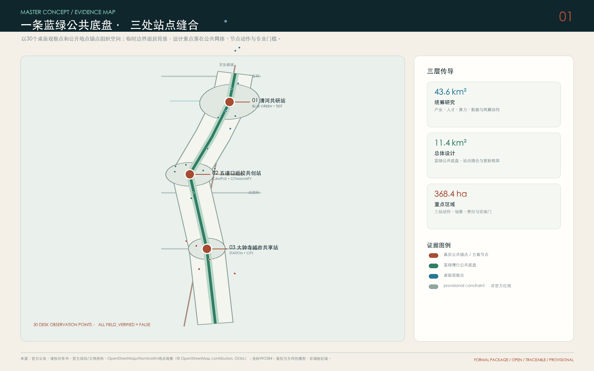
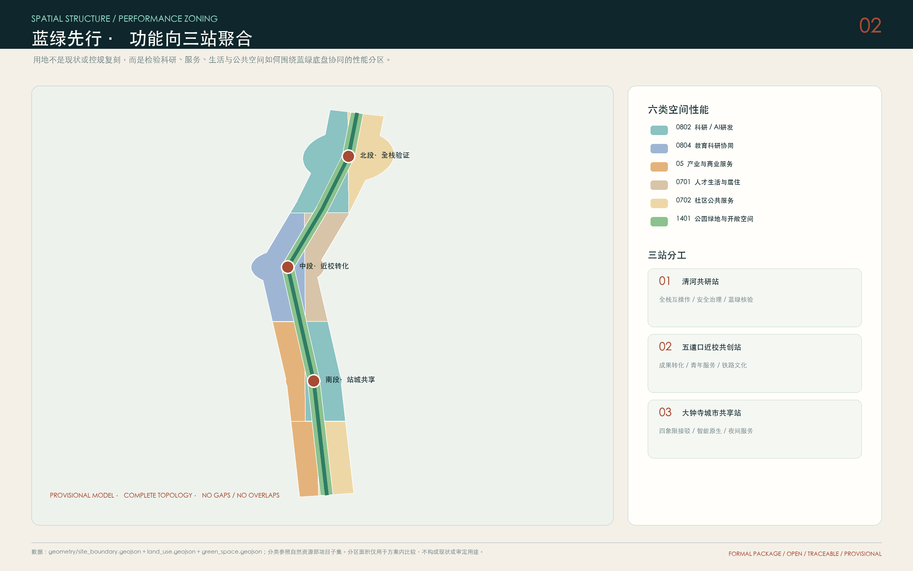
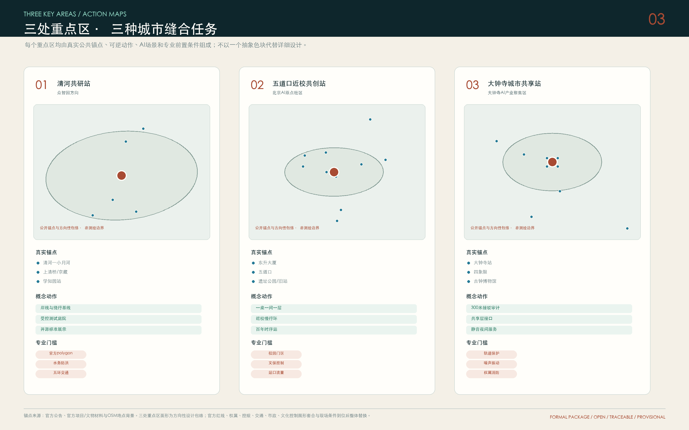
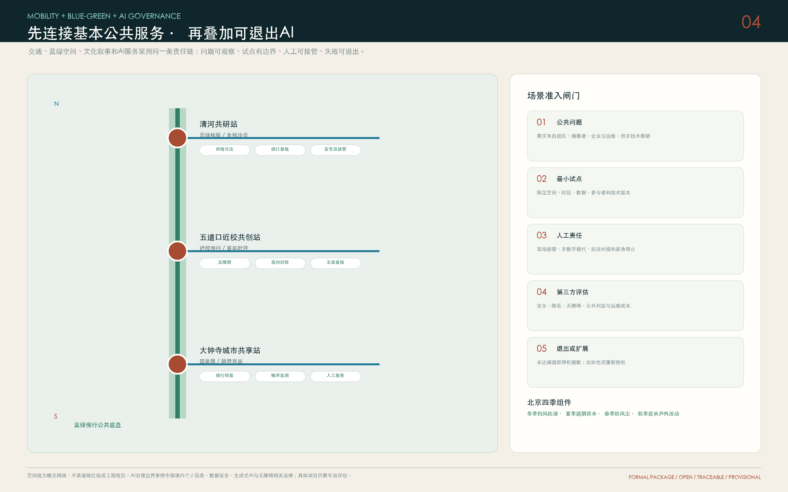
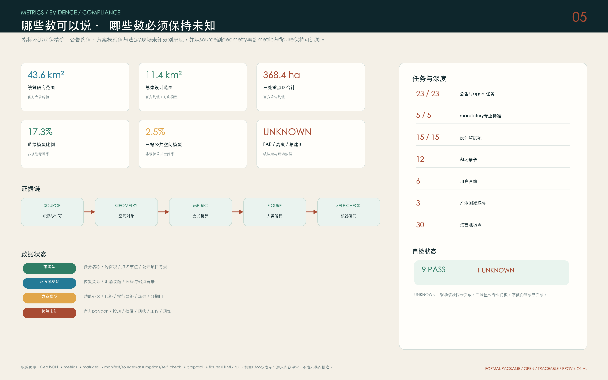

清河共研站
清河—小月河连续、五环/京藏阻隔、学知园接驳与全栈验证沙盒。
蓝绿核验安全治理以清河—小月河—京张铁路遗址公园为蓝绿文化公共底盘，以北段清河共研站、五道口近校共创站和大钟寺城市共享站为实施节点，形成可步行、可验证、可共治的AI创新带参考方案。 方案将公开地图和官方资料能够确认的地点作为锚点，把无法确认的控制条件保持为未知。
清河 · 小月河 · 京张铁路遗址公园
三处站点缝合清河共研站 · 五道口近校共创站 · 大钟寺城市共享站
北、中、南各10个桌面观察点，共30点。所有点均未现场核验；它们用于确定需要观察的问题、路线与专业门槛。

产业、人才、算力、数据、场景与两翼协同。
蓝绿公共底盘、城市更新、站点与慢行缝合。
三站的功能、公共空间、场景、责任与实施门。

连续步行、骑行、无障碍、休息和铁路文化阅读。
先解决四象限、门区、非机动车和夜间回程。
一桌、一间、一层、一处公共界面，支持团队成长。
数据最小化、人工接管、投诉、审计和退出。
清河—小月河连续、五环/京藏阻隔、学知园接驳与全栈验证沙盒。
蓝绿核验安全治理东升大厦—五道口—遗址公园—清华东路西口的近校公共创新链。
成果转化百年时序四象限慢行、项目级300米接驳审计、静音界面与智能原生城市体验。
站城共享夜间服务
从产业验证、站口慢行到文化导览、人才服务和公共运维。
研究者、初创团队、国际家庭、居民与残障人士、服务劳动者、访客。
工具链互操作、低速机器人共行、端侧算力与能耗验证。

共享验证、近校孵化、人才服务、文化展示、站城共享和骑行服务仅以概念包络表达。逐栋拆改留必须经过权属与现状调查、文保生态复核、结构消防市政评估和使用者影响论证。
三站核验；北段蓝绿与阻隔审计。
北段全栈沙盒；五道口近校公共创新环。
百年时序与公共知识；大钟寺300米接驳审计。
南段共享层与静音界面；年度开放场景与全球社区。
蓝绿模型比例
非规划绿地率
三站公共空间模型
非现状公共空间率
容积率 / 高度 / 总建筑规模
桌面观察点
全部未现场核验

公告与agent任务
mandatory专业标准
设计深度项
FIELD_VERIFICATION = UNKNOWN：截至提交日未实地踏勘。官方polygon、控规、权属、交通、市政、文化控制图形套合与现场条件到位后必须整体替换和重算。
官方征集公告、清权智能体任务书、城市设计/控规/用地分类本地标准快照。
官方项目和文物材料、OpenStreetMap/Nominatim地点锚点、张江/河套/one-north/Kendall/Salford案例。
精确红线、重点区polygon、地块与权属、控规、现状建筑、道路断面、轨道保护、市政消防、防洪排涝、其他文化资源控制资料、清华园旧站控制图形套合、公共设施底数和现场观察仍需补齐。所有空间建议为概念建议、参考方案或可供专业团队深化研究。